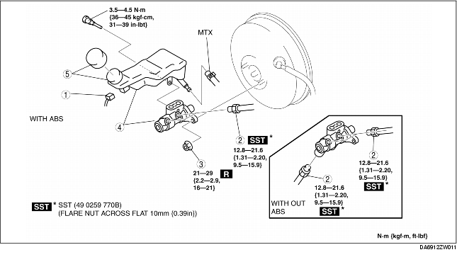

1. Remove the front wiper and blade. (See WINDSHIELD WIPER ARM AND BLADE REMOVAL/INSTALLATION.)
2. Remove the cowl panel. (See COWL PANEL REMOVAL/INSTALLATION.)
3. Remove the front suspension tower bar. (See FRONT SUSPENSION TOWER BAR REMOVAL/INSTALLATION.)
4. Remove the windshield wiper motor. (See WINDSHIELD WIPER MOTOR REMOVAL/INSTALLATION.)
5. Remove in the order indicated in the table.
6. Install in the reverse order of removal.

.
|
1
|
Brake fluid level sensor connector
|
|
2
|
Brake pipe
|
|
3
|
Nut
|
|
4
|
Master cylinder component
|
|
5
|
Reservoir and cap
|